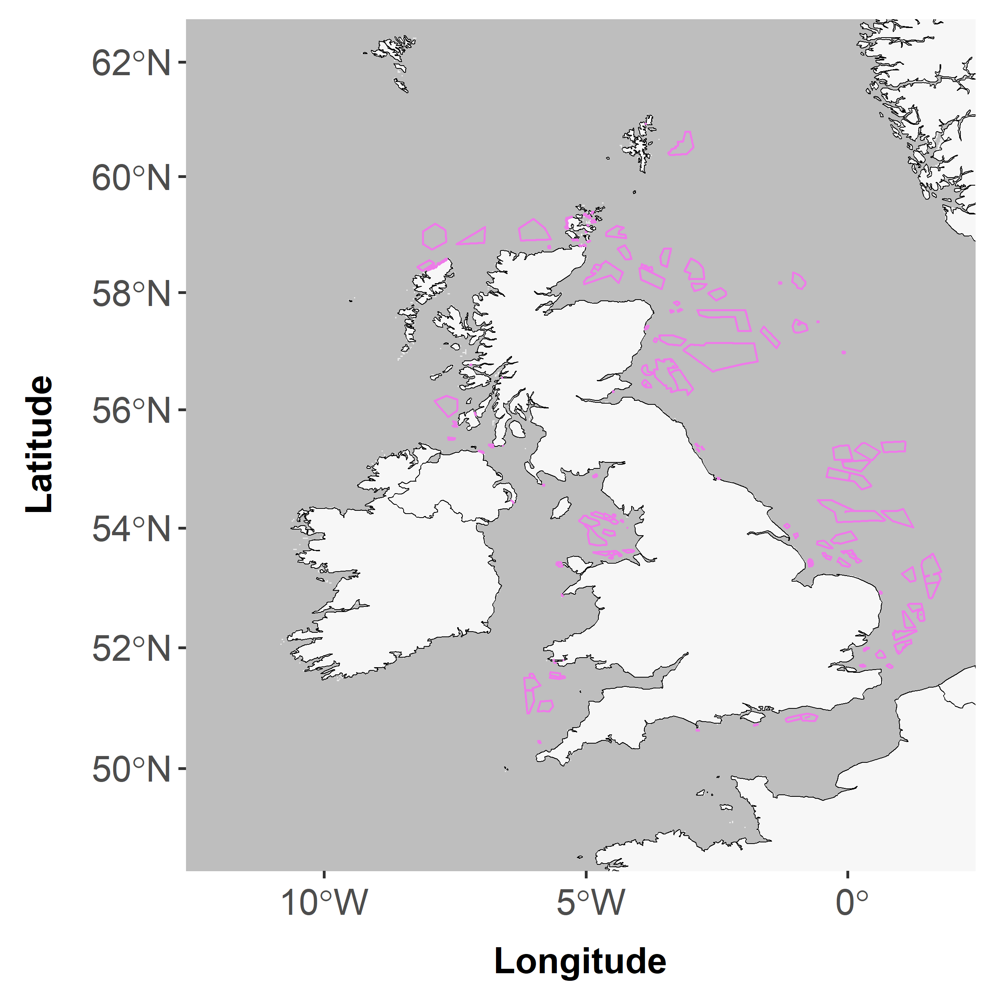
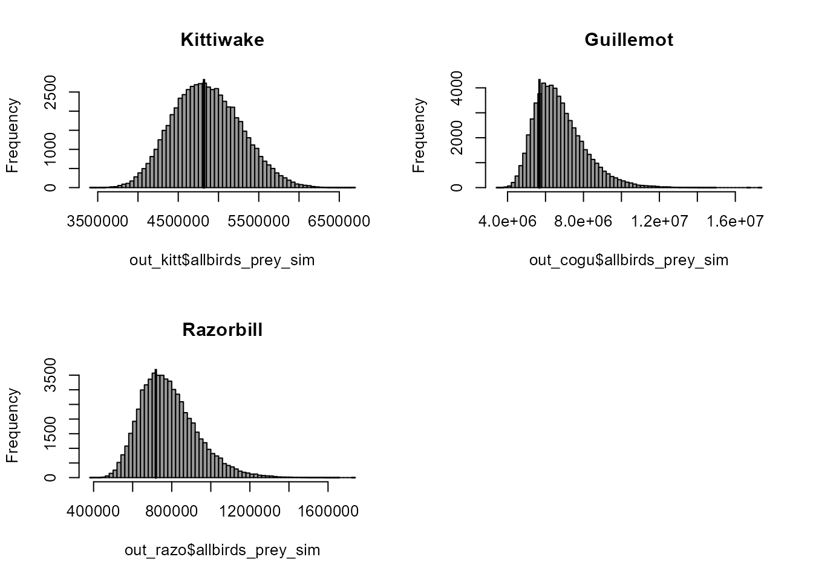

Load packages and functions
## terra 1.8.54## Linking to GEOS 3.13.1, GDAL 3.11.0, PROJ 9.6.0; sf_use_s2() is TRUE##
## Attaching package: 'knitr'## The following object is masked from 'package:terra':
##
## spin## Loading required package: viridisLite##
## Attaching package: 'patchwork'## The following object is masked from 'package:terra':
##
## area## [1] ""## [1] ""## [1] ""## [1] ""Worked example - NnG and Berwick Bank
User specified polygon(s) to use in example
NOTE: TEMPORARY
## Reading layer `windfarmspolyPolygon' from data source
## `C:\Users\clacap\AppData\Local\Temp\RtmpSKcpkE\temp_libpath5fd43c63f29\spmapper\demo\UK_OWF_polygons_by_status'
## using driver `ESRI Shapefile'
## Simple feature collection with 405 features and 9 fields
## Geometry type: MULTIPOLYGON
## Dimension: XY
## Bounding box: xmin: -10.14933 ymin: 45.70603 xmax: 15.16667 ymax: 60.70146
## Geodetic CRS: WGS 84## Spherical geometry (s2) switched off## Coordinate system already present. Adding new coordinate system, which will
## replace the existing one.
Run primary function spmapper() to produce prey consumption maps for each species and optionally extract within user specified polygons
out_kitt <- spmapper(spname = "Kittiwake", fppolys = fppolys, popscen = "baseline", tooldir = tooldir)## |---------|---------|---------|---------|========================================= ## Warning in fpudoverlap(fppolys = fppolys, udmap = udmap): Part or all of
## footprint lies on land or outside area with UD values!
out_cogu <- spmapper(spname = "Guillemot", fppolys = fppolys, popscen = "baseline", tooldir = tooldir)## |---------|---------|---------|---------|========================================= ## Warning in fpudoverlap(fppolys = fppolys, udmap = udmap): Part or all of
## footprint lies on land or outside area with UD values!
out_razo <- spmapper(spname = "Razorbill", fppolys = fppolys, popscen = "baseline", tooldir = tooldir)## |---------|---------|---------|---------|========================================= ## Warning in fpudoverlap(fppolys = fppolys, udmap = udmap): Part or all of
## footprint lies on land or outside area with UD values!Visualise prey consumption maps with optional input polygons overlaid, using spmapplot()
## Plot a single species map
# spmapplot(out_razo$prey_cons_map, fppolys) + ggtitle("Razorbill")
# Plot all species map # REMOVE and simply show how to plot one as above?? <<<<<<<<<<<<<<<<<<<<<<<<<<<<<<<<<<<<<<<<<<<<<<<<<<<
(spmapplot(out_kitt$prey_cons_map, fppolys) + ggtitle("Kittiwake")) +
(spmapplot(out_cogu$prey_cons_map, fppolys) + ggtitle("Guillemot")) +
(spmapplot(out_razo$prey_cons_map, fppolys) + ggtitle("Razorbill")) +
patchwork::plot_layout(ncol = 1)## Coordinate system already present. Adding new coordinate system, which will
## replace the existing one.
## Coordinate system already present. Adding new coordinate system, which will
## replace the existing one.
## Coordinate system already present. Adding new coordinate system, which will
## replace the existing one.
Visualise prey mass estimates
par(mfrow=c(2,2))
hist(out_kitt$allbirds_prey_sim, breaks=50, col=gray(0.6), main="Kittiwake")
lines(rep(out_kitt$allbirds_prey_est,2),c(0,10000),lwd=2)
hist(out_cogu$allbirds_prey_sim, breaks=50, col=gray(0.6), main="Guillemot")
lines(rep(out_cogu$allbirds_prey_est,2),c(0,10000),lwd=2)
hist(out_razo$allbirds_prey_sim, breaks=50, col=gray(0.6), main="Razorbill")
lines(rep(out_razo$allbirds_prey_est,2),c(0,10000),lwd=2)
Tables
tab_kitt <- data.frame(
Species = "Kittiwake",
Estimate = out_kitt$allbirds_prey_est,
Sim_CI_Lower = as.numeric(quantile(out_kitt$allbirds_prey_sim, 0.025)),
# Sim_Mean = mean(out_kitt$allbirds_prey_sim),
Sim_CI_Upper = as.numeric(quantile(out_kitt$allbirds_prey_sim, 0.975)))
tab_cogu <- data.frame(
Species = "Guillemot",
Estimate = out_cogu$allbirds_prey_est,
Sim_CI_Lower = as.numeric(quantile(out_cogu$allbirds_prey_sim, 0.025)),
# Sim_Mean = mean(out_cogu$allbirds_prey_sim),
Sim_CI_Upper = as.numeric(quantile(out_cogu$allbirds_prey_sim, 0.975)))
tab_razo <- data.frame(
Species = "Razorbill",
Estimate = out_razo$allbirds_prey_est,
Sim_CI_Lower = as.numeric(quantile(out_razo$allbirds_prey_sim, 0.025)),
# Sim_Mean = mean(out_razo$allbirds_prey_sim),
Sim_CI_Upper = as.numeric(quantile(out_razo$allbirds_prey_sim, 0.975)))
kable(rbind(tab_kitt, tab_cogu, tab_razo))| Species | Estimate | Sim_CI_Lower | Sim_CI_Upper |
|---|---|---|---|
| Kittiwake | 4819894.3 | 4085681.9 | 5718792 |
| Guillemot | 5681001.3 | 4775665.0 | 9955648 |
| Razorbill | 718604.3 | 553496.9 | 1122483 |
Testing mis-specification of inputs
Incorrect species name
The tool explicitly checks whether the provided species names are valid (including capitalisation)
spmapper(spname = "kittiwake", fppolys = fppolys, popscen = "baseline", tooldir = tooldir)## Error in spmapper(spname = "kittiwake", fppolys = fppolys, popscen = "baseline", : Invalid species name: must be 'Kittiwake', 'Guillemot' or 'Razorbill'!Incorrect population scenario
The tool explicitly checks whether the provided scenario names are valid (including capitalisation)
spmapper(spname = "Kittiwake", fppolys = fppolys, popscen = "medium", tooldir = tooldir)## Error in spmapper(spname = "Kittiwake", fppolys = fppolys, popscen = "medium", : Invalid population scenario: must be 'low', 'baseline' or 'high'Incorrect path to tool
The tool does not currently explicitly check if the path provided is correct/valid, but may yield sensible error messages if an incorrect path is specified
spmapper(spname = "Kittiwake", fppolys = fppolys, popscen = "baseline", tooldir = "test")## Warning in file(file, "rt"): cannot open file 'test/fame_population_ests.csv':
## No such file or directory## Error in file(file, "rt"): cannot open the connectionInconsistencies between footprint polygons and UDs
The tool runs three checks for consistency between polygons and the UD map
Footprints smaller than one grid cell
fppolys <- sf::st_read(system.file("demo/North_Sea_OWF_2030_polygons", package = "spmapper"))## Reading layer `North_Sea_OWF_2030_polygons' from data source
## `C:\Users\clacap\AppData\Local\Temp\RtmpSKcpkE\temp_libpath5fd43c63f29\spmapper\demo\North_Sea_OWF_2030_polygons'
## using driver `ESRI Shapefile'
## Simple feature collection with 177 features and 4 fields
## Geometry type: MULTIPOLYGON
## Dimension: XY
## Bounding box: xmin: -269946.2 ymin: -4249826 xmax: 697913.1 ymax: -3159479
## Projected CRS: North_Pole_Lambert_Azimuthal_Equal_Area
fppolys <- fppolys[which.min(sf::st_area(fppolys)),]
spmapper(spname = "Kittiwake", fppolys = fppolys, popscen = "baseline", tooldir = tooldir)## Error in fpudoverlap(fppolys = fppolys, udmap = udmap): Size of footprint is smaller than the size of a single grid cell - tool would not produce meaningful results in this situationFootprints outside extent of UD
Note: the extent of the UD maps varies between species
fppolys <- sf::st_read(system.file("demo/North_Sea_OWF_2030_polygons", package = "spmapper"))## Reading layer `North_Sea_OWF_2030_polygons' from data source
## `C:\Users\clacap\AppData\Local\Temp\RtmpSKcpkE\temp_libpath5fd43c63f29\spmapper\demo\North_Sea_OWF_2030_polygons'
## using driver `ESRI Shapefile'
## Simple feature collection with 177 features and 4 fields
## Geometry type: MULTIPOLYGON
## Dimension: XY
## Bounding box: xmin: -269946.2 ymin: -4249826 xmax: 697913.1 ymax: -3159479
## Projected CRS: North_Pole_Lambert_Azimuthal_Equal_Area
fppolys <- fppolys[1,]
spmapper(spname = "Guillemot", fppolys = fppolys, popscen = "baseline", tooldir = tooldir)## Error in fpudoverlap(fppolys = fppolys, udmap = udmap): Polygon lies partly or completely outside area of selected grid!Footprints on land (or in other areas of map without values)
Note: this may be footprints on land, but it could also be footprints in areas that are within extent but have missing values as weren’t included in the original modelling in Wakefield et al. (2017)
fppolys <- sf::st_read(system.file("demo/North_Sea_OWF_2030_polygons", package = "spmapper"))## Reading layer `North_Sea_OWF_2030_polygons' from data source
## `C:\Users\clacap\AppData\Local\Temp\RtmpSKcpkE\temp_libpath5fd43c63f29\spmapper\demo\North_Sea_OWF_2030_polygons'
## using driver `ESRI Shapefile'
## Simple feature collection with 177 features and 4 fields
## Geometry type: MULTIPOLYGON
## Dimension: XY
## Bounding box: xmin: -269946.2 ymin: -4249826 xmax: 697913.1 ymax: -3159479
## Projected CRS: North_Pole_Lambert_Azimuthal_Equal_Area
fppolys <- fppolys[155,]
spmapper(spname = "Guillemot", fppolys = fppolys, popscen = "baseline", tooldir = tooldir)## |---------|---------|---------|---------|========================================= ## Warning in fpudoverlap(fppolys = fppolys, udmap = udmap): Part or all of
## footprint lies on land or outside area with UD values!## Error in fpudoverlap(fppolys = fppolys, udmap = udmap): Zero overlap between footprint and any grid cell